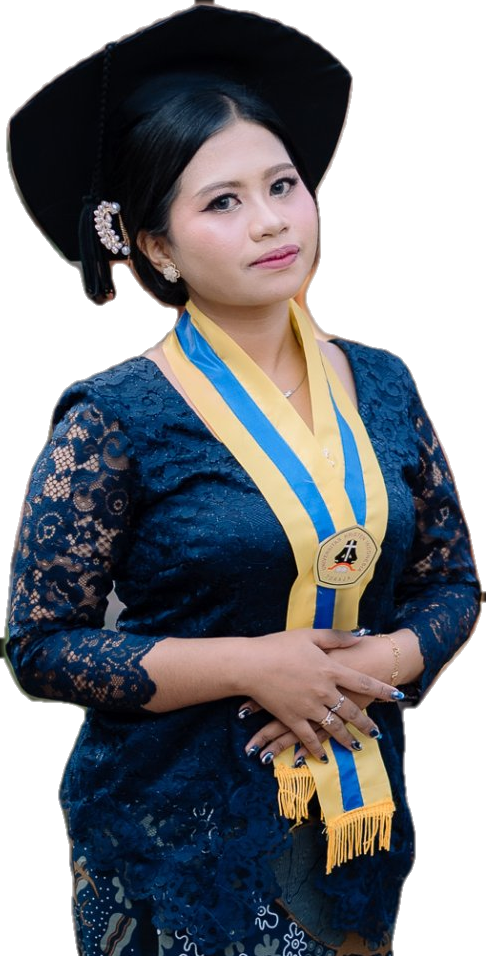
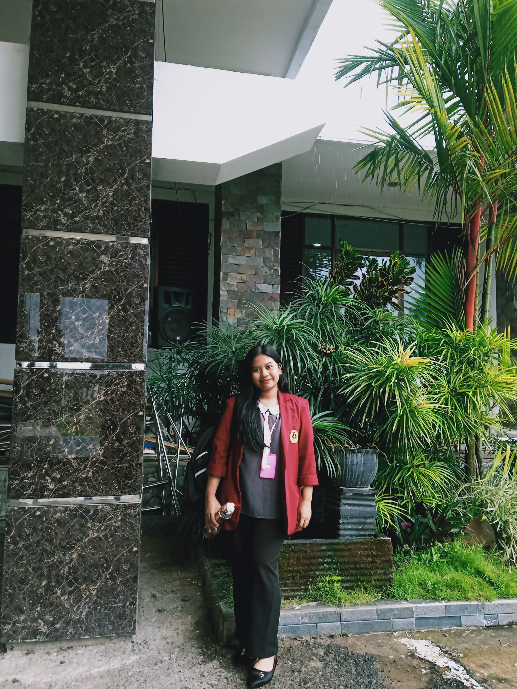
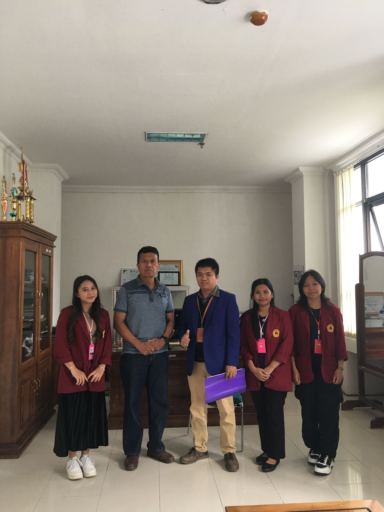
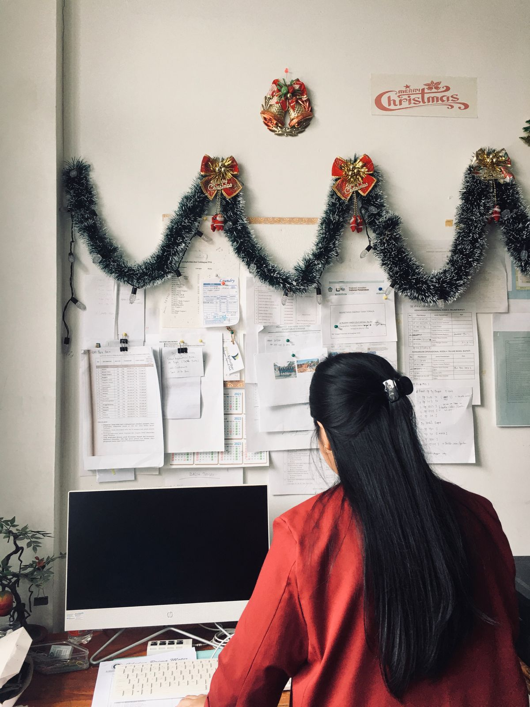
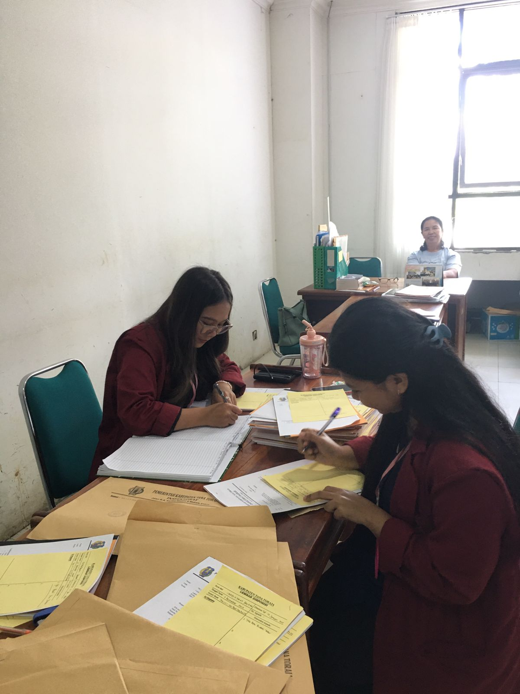
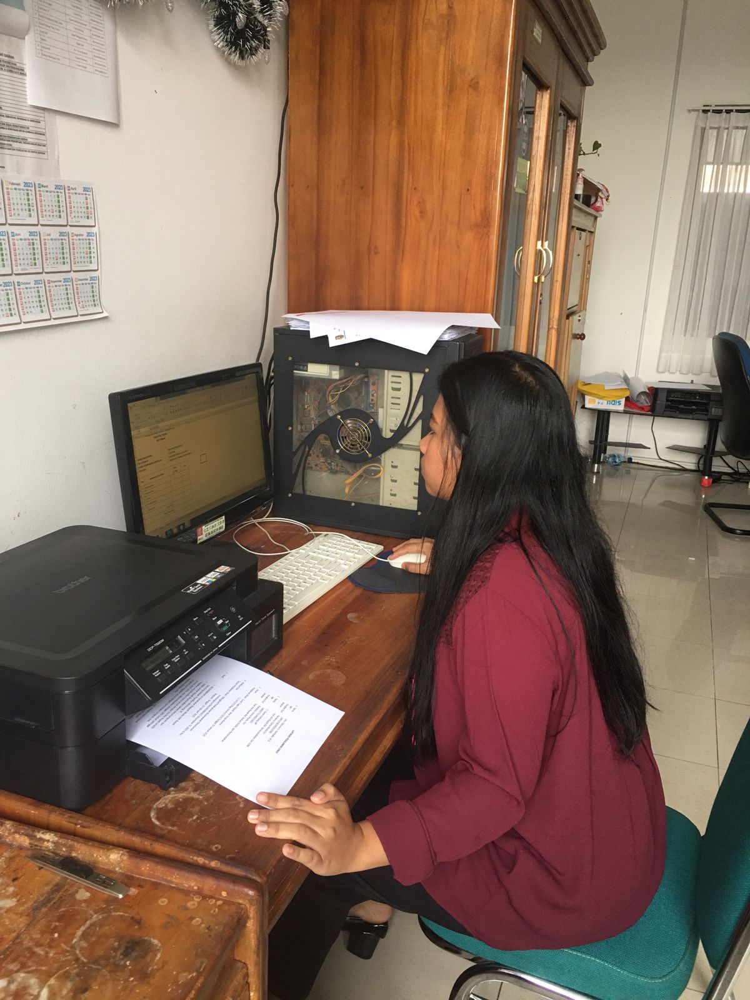
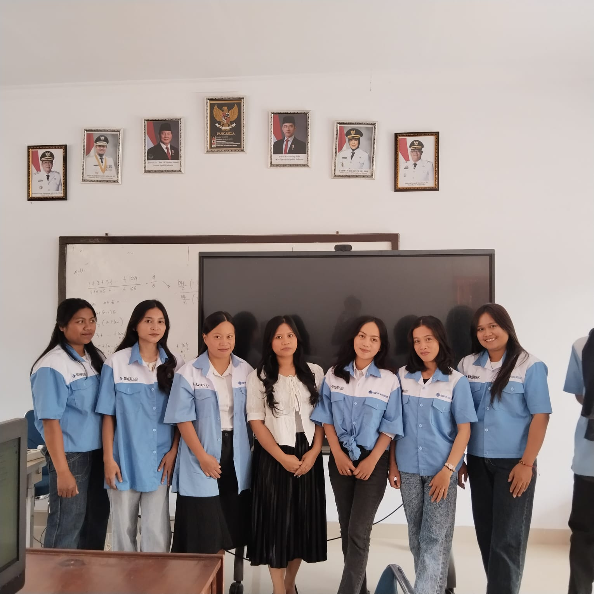

WELCOME TO
Portfolio

2026
Natalin Memory
Ayu
Halo, saya Ayu

Lulusan S1 Teknik Informatika Universitas Kristen Indonesia Toraja yang terbiasa bekerja dengan komputer, mengembangkan sistem informasi, mengelola dokumen dan data, serta menjelaskan materi teknis kepada orang lain. Pengalaman sebagai asisten praktikum di mata kuliah program studi Teknik Informatika, kerja praktek di instansi pemerintah, dan pengajar pelatihan Google Workspace membentuk saya menjadi pribadi yang teliti dan bertanggung jawab. Ke depan, saya ingin berkarier di bidang web development, sistem informasi, pengelolaan data, atau administrasi digital, sambil terus belajar langsung di dunia kerja.
IPK
Tertinggi di Program Studi Teknik Informatika selama 8 semester
Universitas Kristen Indonesia Toraja
S1 Teknik Informatika
Sistem Informasi Layanan Posyandu Berbasis Website untuk Monitoring Pertumbuhan dan Imunisasi Balita dengan Framework Laravel di Kelurahan Rante
Skills
Hard skill
Soft skill
Tools
Kerja Praktek
Sekretariat Daerah Tana Toraja
Bagian Umum

Melakukan input dan validasi data administrasi pegawai (KGB, DPCP, SKP)
Menyusun, mengetik, dan mengarsipkan surat
Mengelola dan mengarsipkan surat masuk dan surat keluar dalam bentuk fisik dan digital
Mencatat dan mengarsipkan data keuangan (kwitansi pengeluaran)




Asisten Laboratorium
Menjelaskan materi praktikum, mendampingi mahasiswa yang mengalami kesulitan, serta memeriksa laporan dan memberi penilaian.
_page-0001.jpg)


Pengajar Pelatihan
Instruktur Administrasi Perkantoran Berbasis Google Workspace
PKBM Arrang Kameloan · Program Kemnaker
Ditugaskan PKBM Arrang Kameloan untuk mengajar pelatihan Administrasi Perkantoran berbasis Google Workspace.
- Mengajarkan cara mengoperasikan Google Docs, Sheets, Slides, Drive, dan Forms.
- Melatih peserta membuat surat resmi, mencatat dan mengarsipkan surat masuk dan keluar, serta mengelola petty cash.
- Mendampingi peserta yang mengalami kesulitan sampai mereka bisa mengikuti materi.



Piagam Penghargaan
IPK tertinggi Prodi Teknik Informatika angkatan 2022 · 8 semester
✦ Piagam semester 4 dan 7 tidak tersedia dalam bentuk arsip. Capaian IPK tertinggi pada kedua semester tersebut dapat diverifikasi melalui transkrip nilai.
Lulusan Terbaik
Wisuda S1 Teknik Informatika · Semester Genap 2025/2026

Graduate